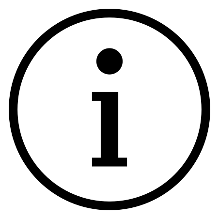

Prolusioni 1, pagine 17 e 18: versione elettronica
Dal manoscritto di
Ferdinand
de Saussure
Introduzione al progetto
Il progetto prevede la codifica digitale image-based di due pagine provenienti dal
manoscritto Ms.fr.3951/1 di Ferdinad de Saussurre.
Le pagine fanno parte di una serie di appunti di de Saussurre scritti per le prime
conferenze all'Università di Ginevra, in parte utilizzati per le prime lezioni del
corso "Phonetique du grec et du latin".
Titolo Ms.fr. 3951/1: Trois premières conférences à l'Université (cours d'ouverture, novembre 1891).
Estensione: 30 + 15 + 22 pages + 1 feuillet.
Titolo Ms.fr. 3951: Notes de linguistique.
Estensione: 353 feuillets.
Descrizione
Le due pagine sono in buone condizioni fisiche, il testo è scritto a mano ma in gran
parte leggibile, con diverse cancellature e/o aggiunte. La numerazione delle pagine è collocata in alto a sinistra, all'interno di un piccolo
cerchio. La carta è di colore giallo/beige, l'inchiostro è nero. Il testo si compone di un'unica colonna, spesso con delle aggiunte a margine.
Ubicazione: Biblioteca di Ginevra, Archivio Ferdinand de Saussure.
Lingua: Francese
Data di creazione: Novembre 1981.
Porzione citata: pp.17-18.

17
par où la langue se trouve mêlée à la
vie des peuples, à la vie politique, sociale, littéraire, ne sont pas, je le
répète, ou ne sont que de temps à autre ce qu'on
peut appeler la vie de la langue elle-même.
C'est à un autre point de vue par conséquent que la
science du langage revendique le titre de science
historique.
-C'est que toute langue, en
elle-même a une histoire qui se déroule perpé-
tuellement, qui est faite d'une succession d'événements
linguistiques, lesquels n'ont point eu de reten-
tissement au-dehors et n'ont jamais été
inscrits par le célèbre burin de l'histoire ;
de même
qu'à leur tour ils sont complètement indépendants
en général de ce qui se passe au-dehors.
Toute langue
présente, un peu comme ces grandes moraines qu'on voit au bas de nos glaciers, le tableau
d'un prodigieux amas de choses charriées
à travers les siècles, mais de
choses qui ont une date, et des dates très différentes,
de même que l'on peut reconnaître dans les dépôts glaciaires que je comparais que tel morceau de granit
vient d'une distance de plusi-
eurs lieues des plus hauts sommets de la chaîne, pendant que tel bloc de quartz? remonte
à peine aux premiers contreforts de la montagne...
Donc la langue
a une histoire, c'est un caractère constant.Est-il
décisif à lui seul pour ranger la science du langage dans les sciences
historiques Assurément non.
La Terre par exemple a une
histoire, qui est racontée par la géologie, d'où

18
il ne suit pas que la géologie soit une science
historique, au moins au sens étroit et précis
que nous donnons à ce terme.
Quelle est donc la
seconde condition impliquée par le mot de science
historique? - C'est que l'objet qui fait la matière de
l'histoire -par exemple l'art, la religion, le costume, etc. - représente, dans un sens quelconque, des
actes humains, régis par la volonté et l'intelligence
humaines, - et qui d'ailleurs doivent être tels
qu'ils n'intéressent pas seulement l'individu mais
la collectivité.
Les faits linguistiques peuvent-ils passer
pour être le résultat d'actes
de notre volonté? Telle est donc la question. La
science du langage, actuelle, yrépond affirmativement.
Seulement il faut ajouter aussitôt qu'il y a beaucoup de degrés connus, comme
nous savons, dans la volonté consciente ou inconsciente; or, de tous
les actes qu'on pourrait mettre en parallèle,
l'acte linguistique, si je puis le nommer ainsi, a ce caractère d'être
le moins réfléchi, le moins prémédité, en même
temps que le plus impersonnel de tous.
Il y a
là une différence de degré, qui va si loin qu'elle
a longtemps donné l'illusion d'une différence es-
-sentielle, mais qui n'est en réalité qu'une différence de degrés.
Forma originale delle abbreviazioni
politiq
.
Forma originale delle abbreviazioni
1historiq
.
Forma originale delle abbreviazioni
Forma originale delle abbreviazioni
Forma originale delle abbreviazioni
1dist
.++IV1er
Forma originale delle abbreviazioni
historiq
.
Forma originale delle abbreviazioni
Forma originale delle abbreviazioni
geolog
.
Forma originale delle abbreviazioni
2ahistoriq
.
Forma originale delle abbreviazioni
Forma originale delle abbreviazioni
Forma originale delle abbreviazioni
11diff
.
Traduzione
per cui la lingua si trova frammischiata alla vita delle popolazioni, alla vita politica,
sociale, letteraria, non sono, lo ripeto, o non sono che di tanto in tanto ciò che
si può chiamare la vita della lingua medesima.
Traduzione
Di conseguenza, è da un altro punto di vista che la scienza del linguaggio rivendica
il titolo di scienza storica.
Traduzione
Il fatto è che ogni lingua in sé ha una storia che si snoda eternamente, la quale
è fatta d’una successione di avvenimenti linguistici, che non hanno avuto alcuna risonanza
esterna, e non sono mai stati incisi dal famoso bulino della storia;
Traduzione
e a loro volta sono ugualmente indipendenti, in generale, da ciò che succede all’esterno.
Traduzione
Ogni lingua presenta, un po’ come quelle grandi morene che si vedono al di sotto ai
nostri ghiacciai, l’immagine di un prodigioso ammasso di cose trasportate attraverso
i secoli, ma di cose che hanno una data, e date molto diverse, così come si può riconoscere
nei depositi dei ghiacciai con cui facevo il paragone che quel tal pezzo di granito
viene da una distanza di molte leghe, dalle cime più alte della catena, mentre quel
tale blocco di quarzo si è staccato da quelli che sono appena i primi contrafforti
della montagna…
Traduzione
Dunque la lingua ha una storia, è un carattere costante. È decisivo, da solo, per
poter classificare la scienza del linguaggio nel novero delle scienze storiche? Sicuramente
no.
Traduzione
La Terra, per esempio, ha una storia, che è raccontata dalla geologia, dal
Traduzione
che non segue però che la geologia sia una scienza storica, per lo meno nel senso
stretto e preciso che noi conferiamo a questo termine.
Traduzione
Qual è dunque la seconda condizione implicata dall’espressione ‘scienza storica’?
Si tratta del fatto che l’oggetto che fa la materia della storia – per esempio l’arte,
la religione, l’abbigliamento, ecc. – rappresenta, in un senso qualsiasi, degli atti
umani, governati dalla volontà e dall’intelligenza umane – e che d’altronde devono
essere tali da non interessare solo l’individuo, ma la collettività.
Traduzione
I fatti linguistici possono passare per essere il risultato di atti della nostra volontà?
Questa è dunque la questione. La scienza del linguaggioattuale vi risponde affermativamente.
Traduzione
Soltanto, bisogna aggiungere anche che ci sono molti gradi conosciuti, come sappiamo,
nella volontà cosciente e incosciente; ora, di tutti gli atti che si potrebbero mettere
in parallelo, l’atto linguistico, se posso chiamarlo così, ha questo carattere d’essere
il meno riflessivo, il meno premeditato, e al contempo il più impersonale di tutti.
Traduzione
C’è una differenza di grado, così spinta da aver dato l’illusione d’una differenza
essenziale, ma che in realtà è solo una differenza di gradi.
Glosse (da qui)
-
langue: Idiome, langue déterminée quelconque.
-
histoire: En linguistique interne: diachronie, linguistique évolutive.
-
terme: Forme impliquée dans un rapport synchronique ou diachronique; unité impliquée dans
une opposition synchronique.
-
mot: Unité complexe mentale et physiologique de la langue; membre de la phrase, unité centrale,
la plus fortement délimitée qui soit; fondée sur la valeur et sur l’identité par la
valeur.
-
objet: Objet désigné opposé à nom, chose, idée extralinguistique.
-
sens: Signification telle qu'elle est représentée par le signifié mais qui dépend en dernière
analyse d'un rapport de valeurs entre termes; voir signification.
-
individu: Membre de l'espèce humaine.
-
degre: Chacun des états, dans une série d'états.
-
acte: Action volontaire.
-
acte_linguistique: De tous les actes (humains) qu'on pourrait mettre en parallèle, l'acte linguistique,
si je puis le nommer ainsi, a ce caractère d'être le moins réfléchi, le moins prémédité,
en même temps que le plus impersonnel de tous.
-
caractere: Élément différentiel. La notion est synchronique
-
linguistique: La science du langage ou des langues, étant sous-entendu que l'objet véritable de
l'étude sera la langue
Note (da Lingua e mente sociale)
-
vie_della_langue: Con ‘vita’ si deve intendere la peculiare forma di storicità,di esistenza storica
della lingua.
-
collectivite: La definizione di storia-vita si fa qui completa: si tratta di una successione di
atti umani, governati dalle “operazioni dell’istinto umano applicate alla lingua
-
reflechi: Riflessivo qui significa soggetto a riflessione.
Breve storia
Gli appunti sono stati scritti fra il 1867 e il 1920. La maggior parte dei documenti
proviene dalla casa di famiglia,
rue de la Tertasse, ed è stata donata da Jacques e Raymond de Saussure alla Biblioteca
di Ginevra. Dopo il 1966 sono state scoperte nuove carte in un gabinetto
dell'Orangerie, donate poi da Madame Bertrand de Saussure e Claude de Saussure. Altre
carte sono state donate da Madame Christine de Saussure nel 2008.